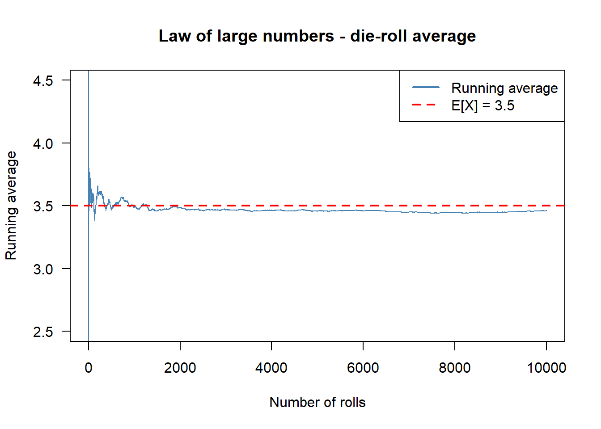
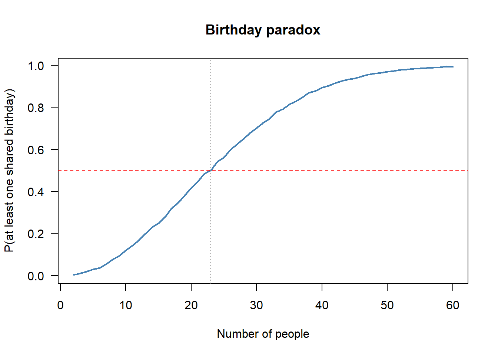
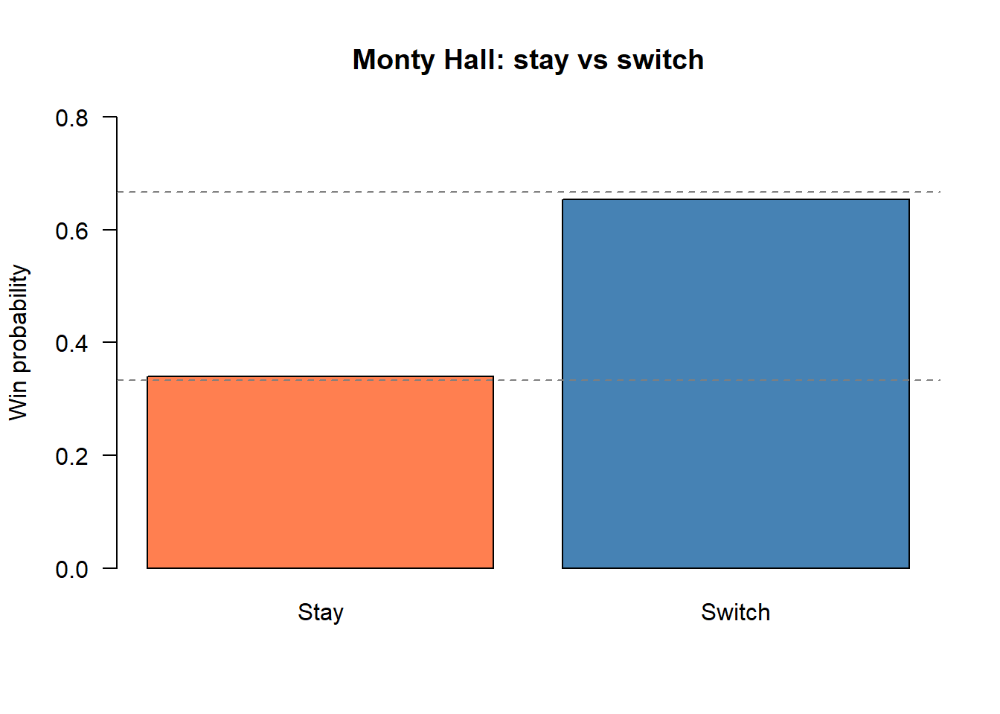

Code
set.seed(2026)
n_sim <- 10000Status: ported 2026-05-19. Reviewed by editor: pending.
By the end of this chapter the reader should be able to:
A rapid test for a disease that affects 1% of the population is 99% sensitive and 95% specific. You test positive. What is the probability that you are actually sick?
The intuitive answer “about 99%” is wrong by an order of magnitude — the correct answer is about 17%. Probability theory, and in particular Bayes’ theorem, is the machinery that turns prior beliefs (the prevalence) and conditional evidence (the test result) into a posterior probability. The same logic governs credit-default models, fraud detection, recession indicators, and insurance pricing. This chapter builds that machinery from the ground up, starting with sample spaces and ending with the false-positive paradox and the Monty Hall problem.
In the first two chapters we described data that had already been collected. We now shift to modelling uncertainty: how should we reason about outcomes that have not yet occurred? The mathematical framework is probability theory.
A random experiment (or aleatory experiment) is any process satisfying three conditions:
Familiar examples include rolling a die, tossing a coin, tomorrow’s closing price of the IBEX-35, and the number of customers entering a shop in one hour. A deterministic process such as evaluating \(2+3\) is not a random experiment because the outcome is fixed.
The sample space \(\Omega\) is the set of all possible outcomes of a random experiment. Each \(\omega \in \Omega\) is an elementary outcome (or sample point).
A sample space is discrete if it is finite or countably infinite, and continuous if it is uncountable. In this chapter we work almost exclusively with discrete (and usually finite) sample spaces; continuous sample spaces appear systematically from Chapter 4 onwards.
The following table records a few canonical examples.
| Experiment | Sample space \(\Omega\) | \(\lvert\Omega\rvert\) |
|---|---|---|
| Toss a coin | \(\{H, T\}\) | 2 |
| Roll a six-sided die | \(\{1, 2, 3, 4, 5, 6\}\) | 6 |
| Toss a coin twice | \(\{HH, HT, TH, TT\}\) | 4 |
| Roll two dice | \(\{(i,j) : i,j \in \{1,\ldots,6\}\}\) | 36 |
| Calls to a call centre in a day | \(\{0, 1, 2, \ldots\}\) | \(\infty\) (countable) |
| Waiting time at a bus stop (min) | \([0, \infty)\) | \(\infty\) (uncountable) |
An event is any subset \(A \subseteq \Omega\). We say \(A\) occurs if the realised outcome \(\omega\) belongs to \(A\).
Three special kinds of events recur throughout the chapter:
Since events are sets, we combine them with the standard set operations.
For \(A, B \subseteq \Omega\):
For any events \(A\) and \(B\):
\[ \overline{A \cup B} = \bar{A} \cap \bar{B}, \qquad \overline{A \cap B} = \bar{A} \cup \bar{B}. \]
The laws generalise to any finite (or countably infinite) collection of events. In words: the complement of a union is the intersection of complements, and the complement of an intersection is the union of complements.
Roll a die and let \(A = \{2, 4, 6\}\) (even) and \(B = \{1, 2, 3\}\) (at most 3). Then \(A \cup B = \{1,2,3,4,6\}\), \(A \cap B = \{2\}\), \(\bar{A} = \{1,3,5\}\), and \(A \setminus B = \{4, 6\}\). The events are not mutually exclusive because \(A \cap B \ne \emptyset\).
The modern axiomatic foundation was set down by Kolmogorov in 1933. The entire theory rests on three rules.
A probability function \(P\) on \(\Omega\) assigns a real number \(P(A)\) to each event \(A \subseteq \Omega\) and satisfies:
(A1) Non-negativity: \(P(A) \geq 0\) for every event \(A\). (A2) Normalisation: \(P(\Omega) = 1\). (A3) Additivity: if \(A \cap B = \emptyset\), then \(P(A \cup B) = P(A) + P(B)\). More generally, if \(A_1, A_2, \ldots\) are pairwise disjoint, \(P\!\left(\bigcup_i A_i\right) = \sum_i P(A_i)\).
From these three axioms one can derive every other property of probability. The most useful are collected below.
For any events \(A, B \subseteq \Omega\):
\[ P(A \cup B) = P(A) + P(B) - P(A \cap B). \]
The three-event version is
\[ \begin{aligned} P(A \cup B \cup C) &= P(A) + P(B) + P(C) \\ &\quad - P(A \cap B) - P(A \cap C) - P(B \cap C) + P(A \cap B \cap C). \end{aligned} \]
Proof sketch of the complement rule. \(A\) and \(\bar{A}\) are disjoint with \(A \cup \bar{A} = \Omega\), so by (A3) and (A2), \(P(A) + P(\bar{A}) = 1\).
Among 200 economics students, 120 study English, 80 study French, and 30 study both. The probability that a randomly chosen student studies at least one of the two languages is
\[ P(E \cup F) = \frac{120}{200} + \frac{80}{200} - \frac{30}{200} = \frac{170}{200} = 0.85. \]
So 85% of the students study at least one language; the remaining 15% study neither.
If \(\Omega\) is finite and all elementary outcomes are equally likely, then for any event \(A\):
\[ P(A) = \frac{|A|}{|\Omega|} = \frac{\text{number of favourable outcomes}}{\text{total number of outcomes}}. \]
The Laplace rule applies only when symmetry justifies equal likelihood (fair coins, fair dice, a well-shuffled deck, a fair lottery). If outcomes are not symmetric — e.g. the daily return of a stock, or the lifetime of a light bulb — the formula does not apply and probabilities must be estimated from data or modelled separately.
The sample space has \(\lvert\Omega\rvert = 36\) equally likely pairs. Let \(A\) = “sum is 7” and \(B\) = “sum is 12”. Then \(A = \{(1,6),(2,5),(3,4),(4,3),(5,2),(6,1)\}\) gives \(P(A) = 6/36 = 1/6 \approx 0.167\), and \(B = \{(6,6)\}\) gives \(P(B) = 1/36 \approx 0.028\). The event \(C\) = “at least one die shows a 6” is easiest computed by complement: there are \(5 \times 5 = 25\) outcomes with no six, so \(P(C) = 1 - 25/36 = 11/36 \approx 0.306\).
Counting arguments such as these rely on the basic combinatorial tools (permutations, combinations, binomial coefficients). A self-contained refresher lives in Appendix A; here we use the formulas as needed.
Partial information about the outcome often changes our assessment of probabilities. This leads to conditional probability.
Let \(A\) and \(B\) be events with \(P(B) > 0\). The conditional probability of \(A\) given \(B\) is
\[ P(A \mid B) = \frac{P(A \cap B)}{P(B)}. \]
The intuition is that knowing \(B\) has occurred shrinks the sample space from \(\Omega\) to \(B\); we then ask which fraction of the new universe also belongs to \(A\).
Roll a fair die with \(A = \{2,4,6\}\) (even) and \(B = \{4,5,6\}\) (greater than 3). Then \(A \cap B = \{4, 6\}\) and
\[ P(A \mid B) = \frac{P(A \cap B)}{P(B)} = \frac{2/6}{3/6} = \frac{2}{3}. \]
Knowing the die showed a number greater than 3 raises the probability of an even result from \(1/2\) to \(2/3\).
Rearranging the definition gives the multiplication rule:
\[ P(A \cap B) = P(A \mid B)\, P(B) = P(B \mid A)\, P(A). \]
The generalisation to \(n\) events is the chain rule
\[ P(A_1 \cap \cdots \cap A_n) = P(A_1)\, P(A_2 \mid A_1)\, P(A_3 \mid A_1 \cap A_2) \cdots P(A_n \mid A_1 \cap \cdots \cap A_{n-1}). \]
An urn contains 5 red and 3 blue balls. Two balls are drawn without replacement. Let \(R_1, R_2\) be “first red” and “second red.” Then
\[ P(R_1 \cap R_2) = P(R_1)\, P(R_2 \mid R_1) = \frac{5}{8} \cdot \frac{4}{7} = \frac{20}{56} = \frac{5}{14} \approx 0.357. \]
The four terminal outcomes RR, RB, BR, BB have probabilities \(20/56,\,15/56,\,15/56,\,6/56\), which sum to \(1\) as required.
Events \(A\) and \(B\) are independent if
\[ P(A \cap B) = P(A) \, P(B). \]
Equivalently, when \(P(B) > 0\), independence means \(P(A \mid B) = P(A)\): knowing \(B\) does not change the probability of \(A\).
Two events are mutually exclusive if \(A \cap B = \emptyset\); they cannot occur together. Two events are independent if \(P(A \cap B) = P(A)\, P(B)\); one does not affect the other. If \(A\) and \(B\) are mutually exclusive with \(P(A) > 0\) and \(P(B) > 0\), then \(P(A \cap B) = 0 \ne P(A)\,P(B)\), so they are not independent — in fact, mutually exclusive events are maximally dependent: observing one guarantees the other did not occur.
Toss a fair coin twice and let \(A\) = “first toss is Heads”, \(B\) = “second toss is Heads”. Then \(P(A) = P(B) = 1/2\) and \(P(A \cap B) = P(\{HH\}) = 1/4 = (1/2)(1/2)\). So \(A\) and \(B\) are independent, matching intuition.
A famous illustration of how badly intuition can mislead us is the birthday problem.
In a room of \(n\) people chosen at random, what is the probability that at least two share a birthday?
Assume birthdays are independent and uniform on 365 days (ignoring leap years). It is easier to compute the complement \(\bar{A}\) = “all birthdays distinct”:
\[ P(\bar{A}) = \frac{365}{365} \cdot \frac{364}{365} \cdots \frac{365 - n + 1}{365} = \prod_{k=0}^{n-1} \frac{365 - k}{365}, \]
so
\[ P(A) = 1 - \prod_{k=0}^{n-1} \frac{365 - k}{365}. \]
| \(n\) | \(P(\text{match})\) | \(n\) | \(P(\text{match})\) |
|---|---|---|---|
| 5 | 0.027 | 30 | 0.706 |
| 10 | 0.117 | 40 | 0.891 |
| 23 | 0.507 | 50 | 0.970 |
| 25 | 0.569 | 60 | 0.994 |
With only \(n = 23\) people the probability exceeds 50%. The trap is that we mentally compare 365 days to the number of people, when the relevant count is the number of pairs: with 23 people there are \(\binom{23}{2} = 253\) pairs, each with a small but non-trivial chance of matching. Pairwise counts grow quadratically, which is why the curve climbs so fast.
Many problems are easier to attack by first splitting \(\Omega\) into a partition and then summing the conditional probabilities.
Events \(A_1, \ldots, A_n\) form a partition of \(\Omega\) if (i) they are pairwise disjoint and (ii) their union is \(\Omega\). Every outcome belongs to exactly one \(A_i\).
If \(\{A_1, \ldots, A_n\}\) is a partition of \(\Omega\) with \(P(A_i) > 0\), then for any event \(B\),
\[ P(B) = \sum_{i=1}^{n} P(B \mid A_i)\, P(A_i). \]
The idea: \(B\) decomposes into the disjoint pieces \(B \cap A_1, \ldots, B \cap A_n\), and additivity gives the sum.
A factory receives components from three suppliers: \(A_1\) supplies 50% with a 2% defect rate, \(A_2\) supplies 30% with a 3% defect rate, and \(A_3\) supplies 20% with a 5% defect rate. Let \(D\) = “defective.” The law of total probability gives
\[ P(D) = (0.02)(0.50) + (0.03)(0.30) + (0.05)(0.20) = 0.010 + 0.009 + 0.010 = 0.029. \]
So 2.9% of all components are defective. The same calculation works for insurance claim rates, recession indicators, and any other “different sub-populations have different rates” problem.
Bayes’ theorem inverts a conditional probability: given \(P(B \mid A_i)\), it returns \(P(A_i \mid B)\). It is the engine of every diagnostic test, every spam filter, and every credit-scoring algorithm.
If \(\{A_1, \ldots, A_n\}\) partition \(\Omega\) with \(P(A_i) > 0\), and \(P(B) > 0\), then
\[ P(A_i \mid B) = \frac{P(B \mid A_i)\, P(A_i)}{\displaystyle\sum_{j=1}^{n} P(B \mid A_j)\, P(A_j)} = \frac{P(B \mid A_i)\, P(A_i)}{P(B)}. \]
The terminology is standard:
In words: \(\text{posterior} = \dfrac{\text{likelihood} \times \text{prior}}{\text{evidence}}.\)
The Bayesian framework reveals an effect that is genuinely surprising the first time one sees it: a highly accurate test for a rare condition can still produce mostly false positives.
For a binary test of a disease:
A disease has prevalence 1%. A test has sensitivity 99% and specificity 99% (so \(P(+ \mid \text{healthy}) = 0.01\)). If a randomly selected person tests positive, what is the probability they are sick?
By the law of total probability,
\[ P(+) = (0.99)(0.01) + (0.01)(0.99) = 0.0099 + 0.0099 = 0.0198, \]
and by Bayes’ theorem,
\[ P(\text{sick} \mid +) = \frac{(0.99)(0.01)}{0.0198} = 0.50. \]
Even with a 99% accurate test, a positive result corresponds to only a 50% chance of being sick. The frequency-table version makes this concrete: out of 10,000 people, 100 are sick and 9,900 healthy. The test catches 99 of the 100 sick (true positives) but also flags \(0.01 \times 9{,}900 = 99\) healthy people (false positives). True and false positives are equal in number, so \(P(\text{sick} \mid +) = 99/(99+99) = 1/2\).
| Test \(+\) | Test \(-\) | Total | |
|---|---|---|---|
| Sick (1%) | 99 | 1 | 100 |
| Healthy (99%) | 99 | 9,801 | 9,900 |
| Total | 198 | 9,802 | 10,000 |
The PPV depends critically on the prevalence:
| Prevalence | PPV |
|---|---|
| 0.1% | 9.0% |
| 0.5% | 33.2% |
| 1% | 50.0% |
| 2% | 66.9% |
| 5% | 83.9% |
| 10% | 91.7% |
| 20% | 96.1% |
| 50% | 99.0% |
The same logic governs fraud detection (a 99% accurate fraud filter swamps the analyst with false alarms if the true fraud rate is low), spam classification, and credit-risk scoring. The base rate is the dominant input — without it the test’s accuracy alone is meaningless.
A company knows that 40% of similar products succeed (\(S\)) and 60% fail (\(F\)). A pre-launch market test gives a positive signal 80% of the time when the product will succeed and 30% of the time when it will fail. If the test is positive, what is the posterior probability of success?
First the evidence:
\[ P(+) = (0.80)(0.40) + (0.30)(0.60) = 0.32 + 0.18 = 0.50. \]
Then Bayes:
\[ P(S \mid +) = \frac{(0.80)(0.40)}{0.50} = 0.64. \]
The positive test result raises the success probability from a prior of 40% to a posterior of 64% — useful, but far from a guarantee.
The Monty Hall problem, named after the host of Let’s Make a Deal, is the most famous demonstration that conditioning on a non-random event can violently shift probabilities.
Three doors hide one car and two goats. You pick a door. The host, who knows where the car is, opens a different door to reveal a goat and offers you the chance to switch. Should you switch?
Let \(C_i\) = “car is behind door \(i\)” with \(P(C_1) = P(C_2) = P(C_3) = 1/3\). Suppose you pick door 1 and the host opens door 3, revealing a goat (event \(H_3\)). The host’s behaviour is constrained: he never opens your door and never opens the car door, so
\[ P(H_3 \mid C_1) = \tfrac{1}{2}, \qquad P(H_3 \mid C_2) = 1, \qquad P(H_3 \mid C_3) = 0. \]
The total probability of \(H_3\) is
\[ P(H_3) = \tfrac{1}{3} \cdot \tfrac{1}{2} + \tfrac{1}{3} \cdot 1 + \tfrac{1}{3} \cdot 0 = \tfrac{1}{2}. \]
Bayes’ theorem gives
\[ P(C_1 \mid H_3) = \frac{(1/3)(1/2)}{1/2} = \frac{1}{3}, \qquad P(C_2 \mid H_3) = \frac{(1/3)(1)}{1/2} = \frac{2}{3}. \]
So staying wins with probability \(1/3\) and switching wins with probability \(2/3\). You should always switch. The host’s action is informative precisely because it is constrained — your initial pick had probability \(1/3\) of being right and nothing the host does later changes that, so the remaining \(2/3\) collapses onto the other unopened door.
The naive “two doors left, so 50/50” intuition treats the host’s choice as random. It isn’t. This is a textbook example of how conditioning on a non-random observation reshapes posterior beliefs.
Probability theory can feel abstract, but simulation makes it tangible. By running thousands of random experiments on a computer we can watch empirical frequencies converge to theoretical probabilities — the law of large numbers in action. Throughout this lab we set set.seed(2026) so results are reproducible across the whole book.
set.seed(2026)
n_sim <- 10000rolls <- sample(1:6, n_sim, replace = TRUE)
freq <- table(rolls) / n_sim
round(freq, 4)rolls
1 2 3 4 5 6
0.1721 0.1763 0.1584 0.1668 0.1651 0.1613 Each face appears close to \(1/6 \approx 0.1667\). With more rolls the deviations shrink further.
flips <- sample(c("Heads", "Tails"), n_sim, replace = TRUE)
round(table(flips) / n_sim, 4)flips
Heads Tails
0.4975 0.5025 The law of large numbers says that the running average of i.i.d. draws converges to the expected value. For a fair die, \(\mathbb{E}[X] = 3.5\).
running <- cumsum(rolls) / seq_len(n_sim)
plot(seq_len(n_sim), running, type = "l", col = "steelblue",
xlab = "Number of rolls", ylab = "Running average",
main = "Law of large numbers - die-roll average",
las = 1, ylim = c(2.5, 4.5))
abline(h = 3.5, col = "red", lty = 2, lwd = 2)
legend("topright", legend = c("Running average", "E[X] = 3.5"),
col = c("steelblue", "red"), lty = c(1, 2), lwd = 2)
The running average wobbles wildly at first but settles tightly around 3.5 as \(n\) grows.
birthday_sim <- function(n_people, n_sim = 10000) {
matches <- replicate(n_sim, {
bdays <- sample(1:365, n_people, replace = TRUE)
any(duplicated(bdays))
})
mean(matches)
}
p23 <- birthday_sim(23)
c(simulated = round(p23, 4), theoretical = 0.5073) simulated theoretical
0.5025 0.5073 group_sizes <- 2:60
probs <- sapply(group_sizes, birthday_sim)
plot(group_sizes, probs, type = "l", col = "steelblue", lwd = 2,
xlab = "Number of people", ylab = "P(at least one shared birthday)",
main = "Birthday paradox", las = 1)
abline(h = 0.5, col = "red", lty = 2)
abline(v = 23, col = "grey50", lty = 3)
By 50 people a match is almost certain. The number of pairs grows as \(\binom{n}{2}\) — quadratically, not linearly.
suits <- rep(c("Hearts", "Diamonds", "Clubs", "Spades"), each = 13)
colors <- ifelse(suits %in% c("Hearts", "Diamonds"), "Red", "Black")
deck <- data.frame(Suit = suits, Color = colors, stringsAsFactors = FALSE)
draws <- deck[sample(52, n_sim, replace = TRUE), ]
red_draws <- draws[draws$Color == "Red", ]
c(sim = round(mean(red_draws$Suit == "Hearts"), 4),
theory = round(13/26, 4)) sim theory
0.4954 0.5000 Half the red cards are hearts, so \(P(\text{Heart} \mid \text{Red}) = 1/2\), confirming \(P(A \mid B) = P(A \cap B)/P(B)\).
n_pop <- 1e6
prevalence <- 0.01
sensitivity <- 0.99
specificity <- 0.95
disease <- rbinom(n_pop, 1, prevalence)
test_result <- ifelse(disease == 1,
rbinom(n_pop, 1, sensitivity),
rbinom(n_pop, 1, 1 - specificity))
conf <- table(Disease = factor(disease, labels = c("No", "Yes")),
Test = factor(test_result, labels = c("Neg", "Pos")))
conf Test
Disease Neg Pos
No 940476 49473
Yes 110 9941tp <- conf["Yes", "Pos"]; fp <- conf["No", "Pos"]
ppv_sim <- tp / (tp + fp)
ppv_theory <- (sensitivity * prevalence) /
(sensitivity * prevalence + (1 - specificity) * (1 - prevalence))
c(simulated = round(ppv_sim, 4), bayes = round(ppv_theory, 4))simulated bayes
0.1673 0.1667 Despite 99% sensitivity, a positive result corresponds to only about a 17% chance of disease — the base-rate fallacy in action.
simulate_monty <- function(n, strategy) {
wins <- 0
for (i in 1:n) {
car <- sample(1:3, 1)
pick <- sample(1:3, 1)
available <- setdiff(1:3, c(pick, car))
host_opens <- available[sample(length(available), 1)]
final <- if (strategy == "switch") setdiff(1:3, c(pick, host_opens)) else pick
if (final == car) wins <- wins + 1
}
wins / n
}
p_stay <- simulate_monty(n_sim, "stay")
p_switch <- simulate_monty(n_sim, "switch")
c(stay = round(p_stay, 4), switch = round(p_switch, 4)) stay switch
0.3397 0.6530 barplot(c(Stay = p_stay, Switch = p_switch),
col = c("coral", "steelblue"), ylim = c(0, 0.8),
main = "Monty Hall: stay vs switch", ylab = "Win probability", las = 1)
abline(h = c(1/3, 2/3), lty = 2, col = "grey50")
Switching wins roughly \(2/3\) of the time, matching the Bayesian analysis above.
Seven short multiple-choice questions. Try each one before opening the answer.
The Kolmogorov axioms require, for any event \(A\) in the sample space \(\Omega\), that:
Answer: B. These are the three axioms — non-negativity, normalisation, and finite additivity for disjoint events.
For two events \(A\) and \(B\), the formula \(P(A \cup B) = P(A) + P(B) - P(A \cap B)\) subtracts \(P(A \cap B)\) because:
Answer: A. Adding \(P(A)\) and \(P(B)\) double-counts the overlap; subtracting \(P(A \cap B)\) removes the duplication.
Two events \(A\) and \(B\) are independent if and only if:
Answer: A. This is the definition. Option C describes mutual exclusivity, which is in fact incompatible with independence when both events have positive probability.
The conditional probability of \(A\) given \(B\) (when \(P(B) > 0\)) is defined as:
Answer: B. This is the textbook definition. Conditioning on \(B\) rescales by the new sample space \(B\).
Bayes’ theorem expands the denominator \(P(B)\) via the law of total probability as:
Answer: A. The partition is \(\{A, A^c\}\); total probability adds the weighted conditional probabilities.
In the medical test example (sensitivity 99%, specificity 95%, prevalence 1%) the PPV is \(P(D \mid +) \approx 0.17\). The intuition is:
Answer: A. The product (false-positive rate)\(\times\)(prevalence of healthy) is the dominant term when the disease is rare.
In the Monty Hall problem (three doors, host opens a goat door after your first pick), switching wins with probability:
Answer: C. The host’s behaviour is informative because he never opens your door and never opens the car door. The \(2/3\) posterior collapses onto the door he leaves closed.
A fair die is rolled once. Define \(A = \{1,2,3\}\), \(B = \{3,4,5,6\}\), \(C = \{2,4,6\}\). Compute:
A regional chamber of commerce holds a lottery for 50 businesses: 20 retail shops, 15 restaurants, 10 tech companies, and 5 consulting firms.
In a city of 10,000 taxpayers: 3,500 have self-employment income (event \(A\)), 5,200 have salaried income (event \(B\)), and 1,400 have both.
A full answer is given in the Instructor Edition.
A human-resources department classifies 500 job applicants by education level and outcome of an aptitude test:
| Pass | Fail | Total | |
|---|---|---|---|
| Secondary education | 60 | 90 | 150 |
| University degree | 140 | 60 | 200 |
| Postgraduate | 120 | 30 | 150 |
| Total | 320 | 180 | 500 |
A full answer is given in the Instructor Edition.
An insurance company classifies car-insurance policyholders by risk: low (60% of policies, claim probability 0.05), medium (30%, 0.15), high (10%, 0.40).
A full answer is given in the Instructor Edition.
A rapid test for a rare disease (prevalence 1%) has sensitivity 98% and specificity 95%.
A full answer is given in the Instructor Edition.
In the Monty Hall problem, let \(C_i\) = “car is behind door \(i\)” and \(H_3\) = “host opens door 3.”
A full answer is given in the Instructor Edition.
A company sells Standard laptops (70% of sales) and Premium laptops (30%). Within the first year, 8% of Standard and 3% of Premium laptops need warranty repair. Among repairs, 60% of Standard and 40% of Premium repairs exceed €200.
A full answer is given in the Instructor Edition.